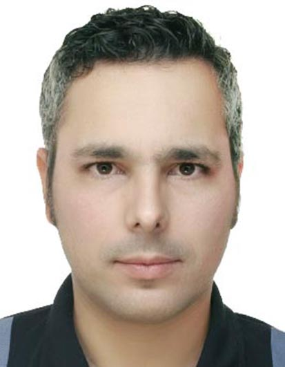
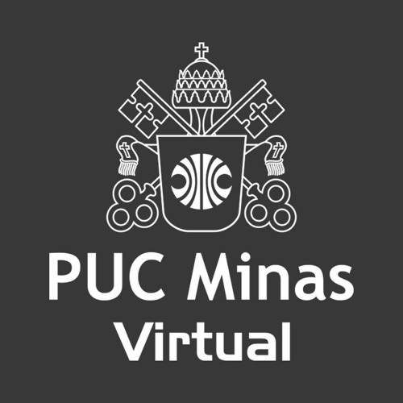
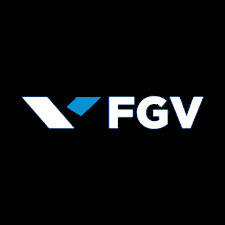
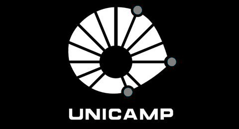
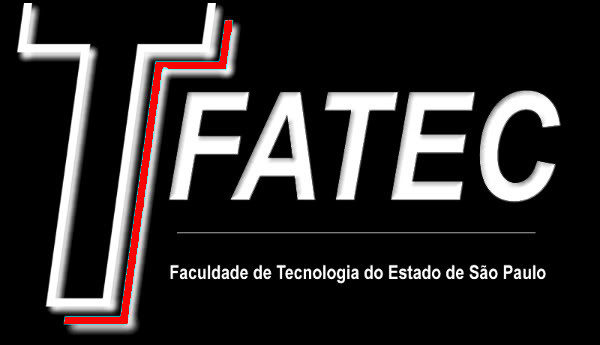
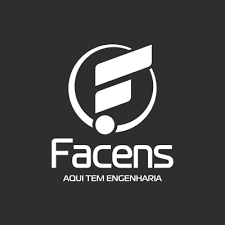

International Experience Driving Innovation and Integration in Automotive Development

With over 20 years of experience in the automotive industry, I've dedicated my career to driving innovation and excellence in product development and application engineering. My journey has been marked by a relentless pursuit of technical excellence combined with strong leadership capabilities.
I specialize in bridging the gap between complex technical challenges and practical business solutions, always maintaining a people-first approach that emphasizes collaboration, empathy, and continuous improvement. My expertise spans across international markets, bringing a global perspective to every project.
Years of Expertise
Personal and Team Awards
Major Projects Worldwide
Different Countries
Pioneered a standardized testing circuit for heavy-duty trucks within sugar cane operations, enhancing operational efficiency and safety.
Pioneered a standardized testing circuit for heavy-duty trucks within sugar cane operations, enhancing operational efficiency and safety.
TThree-time award winner for excellence in strategic project execution and performance.
Integrating ServoTwin steering technology into autonomous sugarcane harvesting trucks to optimize field performance and harvest yields.
Recognized as most capable employee in the company to transfer new technology from Germany to Brazil.
Top performer in postgraduate program, subsequently invited by professors to teach advanced Microcontrollers courses.
Achieved top ranking among 400+ candidates in highly competitive entrance examination, demonstrating exceptional analytical skills.
Honored by the Engineering Institute as best student of electrical engineering.

Strategic Project Management Specialist | Delivering Efficiency & Performance.
Strategic leader with an MBA in Digital Transformation, expert in optimizing business models through data-driven innovation and process modernization.

Advanced executive program focusing on strategic management, financial analysis, and organizational leadership.

Expertise in Process Automation and Control: optimizing complex systems for maximum precision, reliability, and cost-reduction.

Graduated in Mechanical Project Technology with an emphasis on practical engineering solutions and high-precision technical documentation.

Bachelor's degree with emphasis on power systems, control theory, and electronics. Final project on Smart Home Technology.